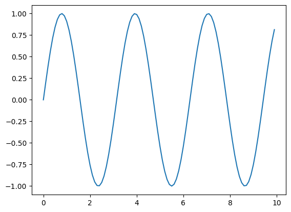
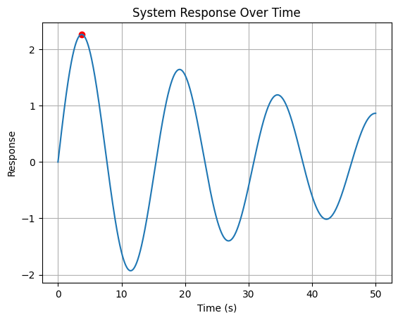
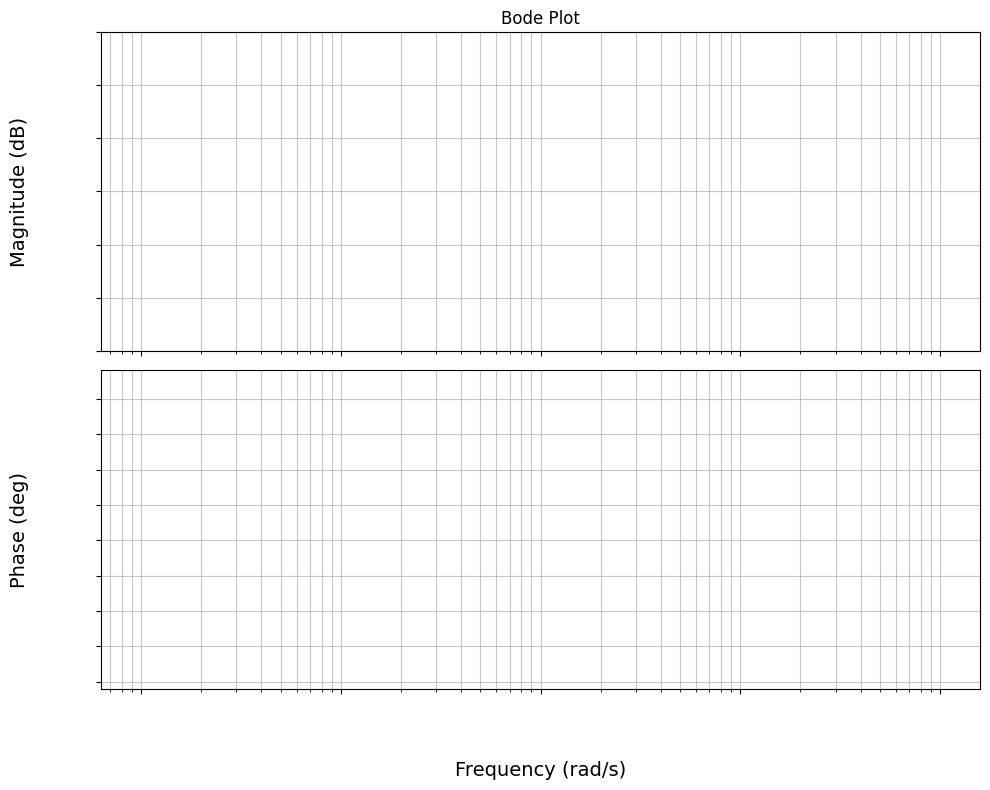
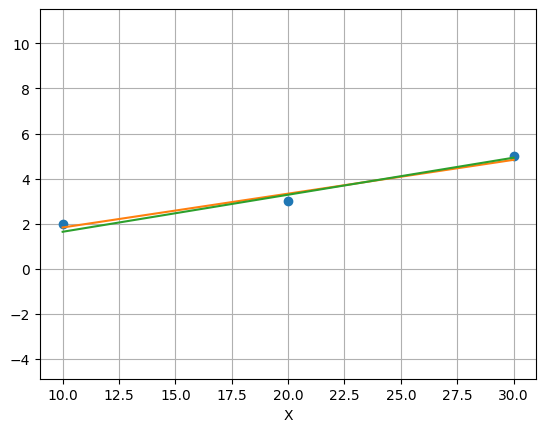

Content with notebooks#
You can also create content with Jupyter Notebooks. This means that you can include code blocks and their outputs in your book.
Markdown + notebooks#
As it is markdown, you can embed images, HTML, etc into your posts!

You can also \(add_{math}\) and
or
But make sure you $Escape $your $dollar signs $you want to keep!
MyST markdown#
MyST markdown works in Jupyter Notebooks as well. For more information about MyST markdown, check out the MyST guide in Jupyter Book, or see the MyST markdown documentation.
Code blocks and outputs#
Jupyter Book will also embed your code blocks and output in your book. For example, here’s some sample Matplotlib code:
from matplotlib import rcParams, cycler
import matplotlib.pyplot as plt
import numpy as np
plt.ion()
<contextlib.ExitStack at 0x1038ef520>
M = np.diag([1, 2])
k1 = 1
k2 = 0.5
K = np.array([[k1 + k2, -k2],
[-k2, k2]])
A = np.block([[np.zeros((2, 2)), np.eye(2)],
[-np.linalg.inv(M) @ K, np.zeros((2, 2))]])
np.linalg.inv(M) @ K
array([[ 1.5 , -0.5 ],
[-0.25, 0.25]])
d, v = np.linalg.eig(A)
np.round(d, 2)
array([-0.+1.26j, -0.-1.26j, 0.+0.4j , 0.-0.4j ])
np.round(v, 4)
array([[-0. -0.6105j, -0. +0.6105j, 0.3244+0.j ,
0.3244-0.j ],
[ 0. +0.1136j, 0. -0.1136j, 0.8713+0.j ,
0.8713-0.j ],
[ 0.7706+0.j , 0.7706-0.j , 0. +0.1285j,
0. -0.1285j],
[-0.1434+0.j , -0.1434-0.j , -0. +0.3452j,
-0. -0.3452j]])
import numpy as np
m = 1
c = 6
k =45
w = np.sqrt(45 / m)
zeta = c / 2 / np.sqrt(k * m)
wd = w * np.sqrt(1 - zeta**2)
wd
6.0
np.log(0.01) / (-zeta * w)
1.535056728662697
np.exp(-np.pi * zeta / np.sqrt(1 - zeta**2))
0.20787957635076193
np.pi / 1.8 / np.sqrt(1-0.5**2)
2.015332626926909
import numpy as np
import matplotlib.pyplot as plt
def response(t, m, c, k, K):
w = np.sqrt(k / m)
zeta = c / 2 / np.sqrt(k * m)
return K * w**2 / wd * np.exp(-zeta * w * t) * np.sin(wd * t)
m = 120
c = 5
k = 20
v_init = np.sqrt(2 * 9.81)
K = m / k
w = np.sqrt(k / m)
zeta = c / 2 / np.sqrt(k * m)
wd = w * np.sqrt(1 - zeta**2)
tp = np.arccos(zeta) / wd
unscaled_peak = response(tp, m, c, k, m / k)
unscaled_peak
2.2664721167546893
yss = m * 9.81 / k
Mp = np.exp(-np.pi * zeta / np.sqrt(1 - zeta**2))
yss * (1 + Mp)
108.99071314525398
L = 300
L - 10 - yss * (1 + Mp)
181.00928685474602
3(s+5)}{(s+3)(s-1)
Cell In[17], line 1
3(s+5)}{(s+3)(s-1)
^
SyntaxError: unmatched '}'
def process(coefficients, s):
def linear(coeff, s):
real = coeff
imaginary = s
return real, imaginary
# return np.linalg.norm(np.array([real, imaginary]))
def quadratic(coeff, s):
b, c = coeff
real = -s**2 + c
imaginary = b * s
return real, imaginary
# return np.linalg.norm(np.array([real, imaginary]))
if len(coefficients) == 1:
return linear(coefficients[0], s)
elif len(coefficients) == 2:
return quadratic(coefficients, s)
def magnitude(zeros, poles, s):
num = 1
den = 1
for z in zeros:
real, imaginary = process(z, s)
num *= np.linalg.norm(np.array([real, imaginary]))
for p in poles:
real, imaginary = process(p, s)
den *= np.linalg.norm(np.array([real, imaginary]))
return num / den
def angle(zeros, poles, s):
num = 0
den = 0
for z in zeros:
real, imaginary = process(z, s)
num += np.arctan2(imaginary, real)
for p in poles:
real, imaginary = process(p, s)
den += np.arctan2(imaginary, real)
return num - den
ts = np.arange(0, 10, 0.1)
plt.plot(ts, np.sin(2 * ts), c='k')
[<matplotlib.lines.Line2D at 0x16a21c050>]

zeros = [[10]]
poles = [[4, 16]]
w = 0.1
magnitude(zeros, poles, w), angle(zeros, poles, w)
(np.float64(0.6252265408982779), np.float64(-0.015010751932253649))
np.pi + angle([[5]], [[2], [-9]], 0.4)
np.float64(-0.07315035889073274)
w = 10
3 * np.linalg.norm(np.array([w, 5])) / (np.linalg.norm(np.array([w, 3])) * np.linalg.norm(np.array([w, -1])))
np.float64(0.31967032704705056)
L = 300
def quad (p):
return p**2 + np.sqrt(2 * 9.81) * unscaled_peak * p - L - 10 - yss * (1 + Mp)
np.roots([1, np.sqrt(2 * 9.81) * unscaled_peak, -(L - 10 - yss * (1 + Mp))])
array([-19.3794753 , 9.34025736])
t = np.linspace(0, 50, 1000)
y = response(t, m, c, k, K)
plt.plot(t, y)
plt.scatter(tp, unscaled_peak, color='red')
plt.xlabel('Time (s)')
plt.ylabel('Response')
plt.title('System Response Over Time')
plt.grid()

# Fixing random state for reproducibility
np.random.seed(19680801)
N = 10
data = [np.logspace(0, 1, 100) + np.random.randn(100) + ii for ii in range(N)]
data = np.array(data).T
cmap = plt.cm.coolwarm
rcParams['axes.prop_cycle'] = cycler(color=cmap(np.linspace(0, 1, N)))
from matplotlib.lines import Line2D
custom_lines = [Line2D([0], [0], color=cmap(0.), lw=4),
Line2D([0], [0], color=cmap(.5), lw=4),
Line2D([0], [0], color=cmap(1.), lw=4)]
fig, ax = plt.subplots(figsize=(10, 5))
lines = ax.plot(data)
ax.legend(custom_lines, ['Cold', 'Medium', 'Hot']);
---------------------------------------------------------------------------
NameError Traceback (most recent call last)
Cell In[1], line 2
1 # Fixing random state for reproducibility
----> 2 np.random.seed(19680801)
4 N = 10
5 data = [np.logspace(0, 1, 100) + np.random.randn(100) + ii for ii in range(N)]
NameError: name 'np' is not defined
import numpy as np
import matplotlib.pyplot as plt
There is a lot more that you can do with outputs (such as including interactive outputs) with your book. For more information about this, see the Jupyter Book documentation
import matplotlib.pyplot as plt
import numpy as np
def generate_empty_bode(w_min, w_max, labelpad=45):
# Create frequency range
freq = np.logspace(w_min, w_max, 100)
# Create figure and axes (2 rows, 1 col)
fig, (ax1, ax2) = plt.subplots(2, 1, figsize=(10, 8))
# Magnitude Plot Setup
ax1.semilogx(freq, np.zeros_like(freq), color='white', zorder=-4) # Invisible line to set scale
ax1.set_ylabel('Magnitude (dB)', labelpad=labelpad, fontsize=14)
ax1.set_title('Bode Plot')
ax1.grid(True, which="both", ls="-", alpha=0.7)
ax1.set_ylim(-100, 20)
ax1.set_xticklabels([])
ax1.set_yticklabels([])
# Phase Plot Setup
ax2.semilogx(freq, np.zeros_like(freq), color='white', zorder=-4) # Invisible line to set scale
ax2.set_ylabel('Phase (deg)', labelpad=labelpad, fontsize=14)
ax2.set_xlabel('Frequency (rad/s)', labelpad=labelpad, fontsize=14)
ax2.grid(True, which="both", ls="-", alpha=0.7)
ax2.set_xticklabels([])
ax2.set_yticklabels([])
ax2.set_ylim(-360, 90)
plt.tight_layout()
plt.show()
return fig, (ax1, ax2)
fig, axes = generate_empty_bode(1,5)
fig.savefig('quiz02_bode_template_accelerometer.svg', dpi=300, transparent=True)

np.array([[1,1,1],[10, 20, 30]]).T
array([[ 1, 10],
[ 1, 20],
[ 1, 30]])
Y = np.array([2, 3, 5])
XB = np.array([[1, 1, 1], [10, 20, 30]]).T
XA = XB[:, 1:]
ma = np.linalg.pinv(XA) @ Y
mb = np.linalg.pinv(XB) @ Y
plt.plot(XA, Y, 'o', label='Data Points')
plt.plot(XB[:, 1], XB @ mb, label='Fitted Line with Intercept')
plt.plot(XA, XA @ ma, label='Fitted Line without Intercept')
plt.xlabel('X')
plt.grid()
plt.axis("equal")
(np.float64(9.0),
np.float64(31.0),
np.float64(1.475000000000001),
np.float64(5.167857142857143))

ma
array([0.16428571])
np.linalg.lstsq(XA, Y, rcond=None)
(array([0.16428571]), array([0.21428571]), np.int32(1), array([37.41657387]))
np.linalg.lstsq(XB, Y, rcond=None)
(array([0.33333333, 0.15 ]),
array([0.16666667]),
np.int32(2),
array([37.45093076, 0.6540531 ]))